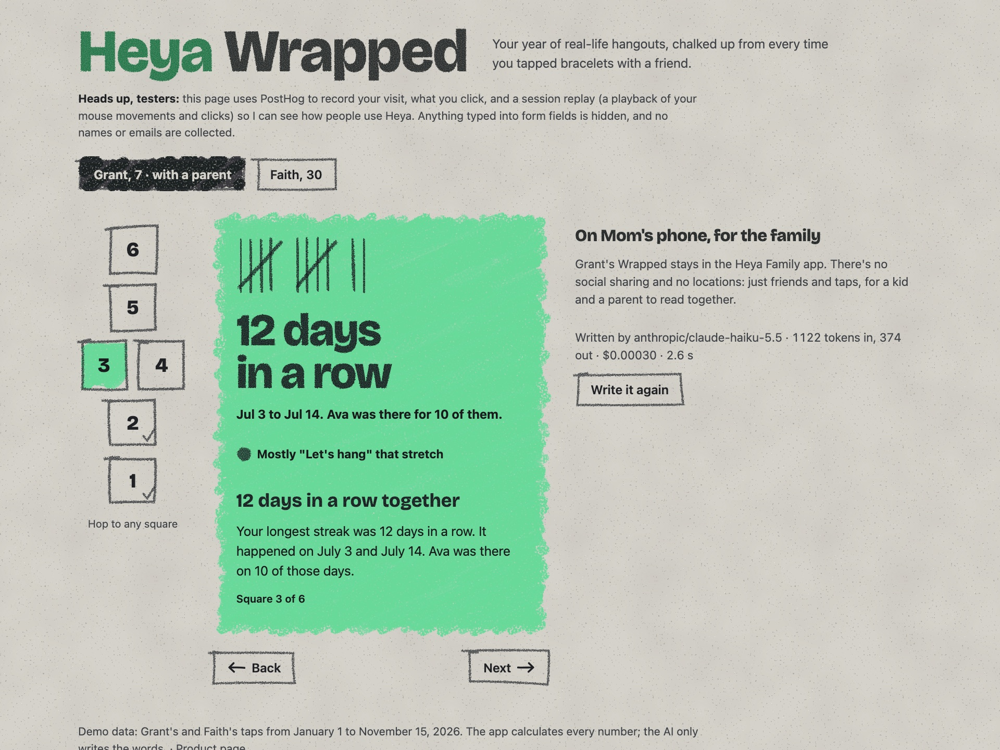
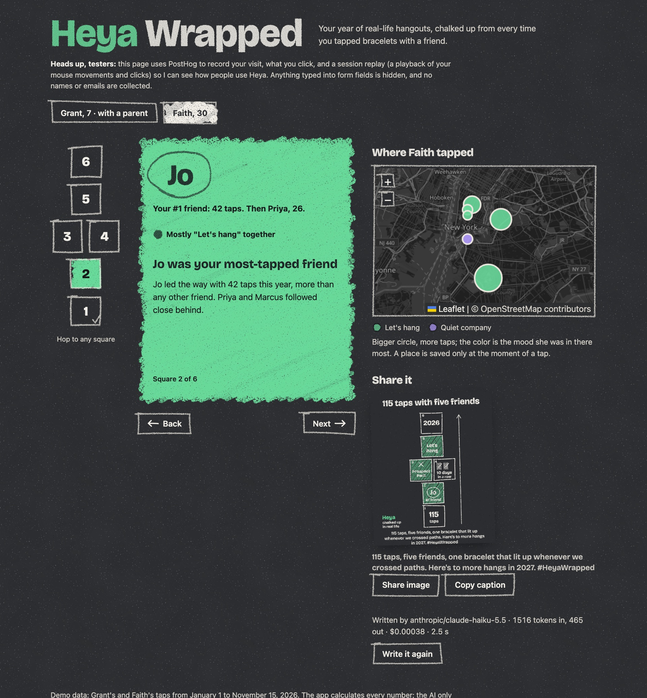
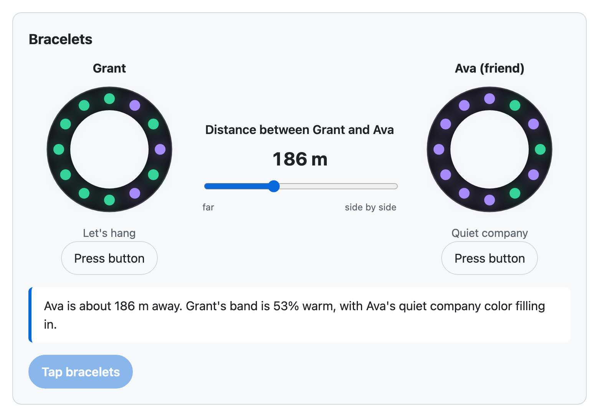
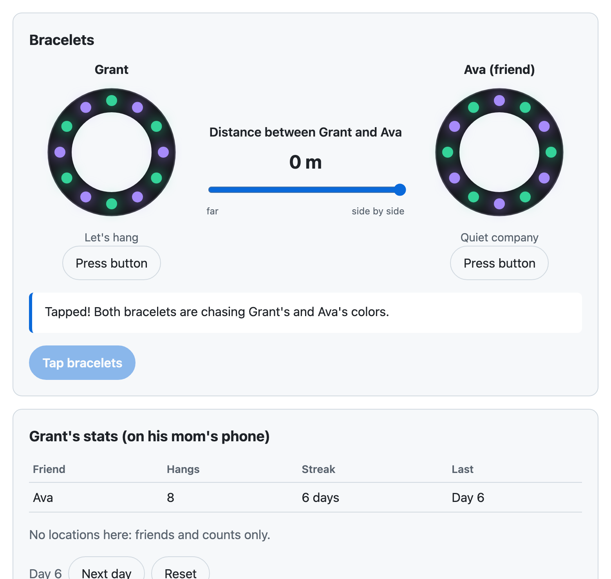

Heya
A light-up bracelet that gets people off their screens and into real time with friends.
Try the prototypeHeads up, testers: this page uses PostHog to record your visit, what you click, and a session replay (a playback of your mouse movements and clicks) so I can see how people use Heya. Anything typed into form fields is hidden, and no names or emails are collected.
Quick question: how would you use Heya?
If you already have a phone, would you wear a separate Heya bracelet, or would you rather get Heya as an app? Pick one; it helps decide what to build next.
PRD v2: Heya Wrapped
Build 2 adds the stats pages from the PRD as Heya Wrapped: a year of bracelet taps, written up as a short story you hop through like a hopscotch. There are two versions, one per user:
- Grant (7, no phone) reads his Wrapped with a parent in the Heya Family app. It shows friends and taps only: no locations, no sharing.
- Faith (30) gets a map of where she tapped, her top friends, and a chalk-drawn image she can share.
Biggest risk
The tapping habit fades once the bracelet stops being new. Heya only works if friends keep tapping when they meet. If a tap feels pointless after the first few weeks, Grant stops tapping, his parents stop seeing value, and Faith never shares anything that brings new people in.
The hardware question from Build 1 (how a bracelet with no phone shares a location with parents) is still open, but it's a cost and engineering problem. This risk is about whether people want the product at all, so it comes first.
How this build tests it
Wrapped is the payoff for tapping. If looking back at a year of real-life hangouts feels rewarding, tapping has a reason to continue. This build puts a working Wrapped in front of testers and measures what they do with it in PostHog:
- Do they finish it? The share of
wrapped_generatedruns that reach the last square (wrapped_completed). - Do they explore?
hopscotch_hopandwrapped_card_viewedshow whether people jump around or just click Next. - Would adults share it?
wrapped_sharedandcaption_copiedon Faith's version. - What do they say? I'll ask each tester one question afterward: "Would this make you want to tap more?"
Pass bar: at least 6 in 10 testers reach the last square, and at least 1 in 4 who see Faith's version press Share. Results will go in the Build 2 log; there is no tester data yet.
How the app works
One full user action, start to finish, running on my laptop (app/ in the repo; setup is in AGENTS.md):
- The tester picks Grant or Faith and presses Make my Wrapped.
- The local Python server reads that person's tap history and calculates every number itself: top friends, longest streak, moods, busiest month and, for Faith only, top places.
- The server sends only those numbers to Claude Haiku 5.5 through OpenRouter, a real AI call. The API key stays on the server and never reaches the browser. The prompt allows the AI to write words only: no new numbers, no invented details, no pronoun guesses, and kid-friendly wording for Grant. Grant's data never includes locations.
- The server checks the reply (every card present, valid JSON) and sends it back. If the AI skips Faith's share caption, the server builds one from the real stats.
- The page draws six chalk cards on a hopscotch. Each card's color is the real mood behind it (green = Let's hang). Faith also gets the map and a shareable image.
- PostHog records each step: the request, the result with its cost, every card viewed, hops, and shares.


Cost per run
Each Wrapped makes one AI call. Measured over about 30 real runs on November 16:
| Grant (kid) | Faith (adult) | |
|---|---|---|
| Tokens in / out | about 1,100 / 380 | about 1,500 / 480 |
| Cost per run | about $0.0003 | about $0.0004 |
| Time | 2.0–2.7 s | 2.4–3.0 s |
That works out to roughly 2,500–3,500 Wrapped runs per dollar, at OpenRouter's price of $0.10 per million input tokens and $0.50 per million output tokens. One Wrapped per user per year for 10,000 users would cost about $4. The cost doesn't change the decision; whether people want it does.
PRD v1: Summary
Heya is a slim bracelet with a one-button mood light and a companion app. You pick a mood, and friends nearby can see it glowing on your wrist:
- Green: "let's hang"
- Purple: "quiet company"
- Yellow: "busy, but wave"
- Off: not available
As two friends walk toward each other, their bracelets glow warmer and then pulse together. When they meet, they tap bracelets to save the moment and build a streak. What the app does with that tap depends on who's wearing the bracelet:
| Kids without phones | Gen Z and young adults with phones | |
|---|---|---|
| Who runs the app | A parent | The wearer |
| What a tap builds | A stats page: which friends you've tapped with, how often, and your streaks | A private map of the places you've hung out |
| Location | Parents can see where their kid is | Saved only at the moment of a tap and never shared |
Target users
User 1: Kids without phones
Grant, 7. Very social and always wants to be with his friends. He's too young for a phone, so every meetup has to go through a parent.
Why him
His parents are the buyers, and they have two problems: they need to know where he is before they'll say yes to going out, and they want him off screens. The bracelet answers both, and tapping with friends turns his social energy into a game he actually wants to play.
User 2: Gen Z and young adults
Faith, 30. Very social, always out and about in the city, and always happy to stop and say hi. Her friends live and work all over town, so they're often a few blocks apart without knowing it.
Why her
She already wants to see people in person. What's missing is knowing when a friend is close by. She buys the bracelet for the fun of running into people, without sharing her location all day.
Before and after
Grant: Saturday morning
Before
- Grant wakes up wanting to play with friends and asks his mom, "Can I see Ava? Is Theo outside?"
- She texts the other parents to set up a playdate. Replies take an hour, or never come.
- At 7, he can't go to the playground alone, because no one can check where he is.
- While he waits, he ends up on the tablet. The morning goes by with no friends at all.
The pain: Grant is a very social kid with no way to find his friends without an adult in the middle. His parents can choose freedom and worry, or safety and screens.
After
- Grant presses his bracelet, and it glows green. His mom can see in her app that he's at the neighborhood playground.
- Ava's bracelet is green too. As they get closer, both glow warmer, then pulse.
- They tap bracelets, and their streak goes up to 6.
- At dinner, Grant reads his stats page on his mom's phone: Ava is still at the top, and Theo is catching up.
The change: his parents get peace of mind without handing him a phone, and Grant gets a game he wins by going outside and finding his friends.
Faith: a Saturday in the city
Before
- Faith is out running errands and grabbing coffee, and would love some company.
- She texts a few friends: "anyone around?" Replies come in an hour later, after she's gone home.
- Turning on constant location sharing would solve it, but having everyone see where she is all day feels like too much.
- That evening, she sees a friend's story from a café two blocks from where she was sitting.
The pain: Faith is always down to say hi, but she only finds out about near misses afterward. The only fix today is sharing her location all the time.
After
- Faith sets her bracelet to green and heads out without checking her phone.
- As she walks past the farmers market, her bracelet starts glowing warmer. A friend is close by.
- They spot each other, both bracelets pulse, and they tap, then grab a coffee together.
- That night, "the farmers market" appears on her private map.
The change: near misses become chance meetups, and Faith never has to ask or share her location.
Core workflow (v1)
v1 does exactly one thing well, the same way for both users: signal, find, tap.
- Signal: one press cycles the mood: green, purple, yellow, off.
- Find: the bracelet detects paired friends' bracelets directly over short range. The glow warms as the signal gets stronger.
- Meet: at close range, both bracelets pulse in sync.
- Tap: touching bracelets records a mutual "hang" that needs both devices to confirm it. It updates the streak, then the kid's stats page (no phone) or the wearer's map (phone).
Done when: two friends can go from "both off" to a saved tap without either of them taking out a phone.
Friends are added only by tapping bracelets in person the first time, so the friend list is always people you've actually met.
Prototype
A rough local prototype of the core workflow. Each bracelet has its own button, a slider sets how far apart the friends are, and tapping saves the hang. Try it yourself.


Build 1 log
What works
- The full core workflow runs end to end in the prototype: signal, then find, then meet, then tap, for both Grant (no phone, stats page) and Faith (phone, private map).
- 25 of 25 automated checks pass in headless Chrome. They cover:
- Unpaired bracelets ignore each other.
- The first tap in person pairs the bracelets.
- Closer means warmer (73% at 110 m, 96% at 18 m).
- Bracelets out of range don't glow.
- A tap is blocked when either bracelet is off.
- Streak rules: same day stays the same, next day goes up by one, a skipped day resets it to 1.
- Faith's map pins.
- Each scenario keeps its own progress, and Reset clears it.
- The layout works at phone width (360 px) with no sideways scrolling, and in both light and dark mode. I checked this with screenshots.
What I learned
- The earlier Claude Design prototype never tested the main idea. I read its code against the core workflow. The mood button worked, but "glow warms as a friend gets closer" and "both bracelets pulse together" existed only as description text, and none of its three frames simulated them. The part of Heya that makes it different hadn't been prototyped at all.
- Brightness that changes evenly with distance mostly happens out of sight. With warmth based directly on distance over a 400 m range, the band is already 92% warm at 34 m. Nearly all the change happens blocks away, and almost none happens at the walking-up-to-someone distance where it should feel exciting. The next build should save most of the change for the last stretch.
- The hardware sketch can't support the parent promise. The Heya Band design's pod holds LoRa, Bluetooth, a battery and charging contacts, but no GPS or cellular. Showing parents where Grant is needs a way to get his location out of the bracelet that doesn't exist yet. It's the biggest open question.
- Pairing only in person has a side effect. The first meetup between two friends can't use Heya at all, because their bracelets ignore each other until that first tap.
What broke or changed
- Bugs in the earlier prototype, all fixed in this build:
- Tapping worked even when a bracelet was off.
- The friend always showed in a fixed blue that isn't one of the mood colors.
- Tapping twice quickly cut the second animation short.
- Scope changed during the build. Parent location tracking for kids without phones became a feature. That contradicted the original non-goal "no location tracking," so I rewrote that non-goal as "no sharing locations between friends." The second user group became "Gen Z and young adults," since Faith is 30.
- Problems with my own build and tests:
- An empty place dropdown showed up in Grant's mode, because a CSS rule overrode
hidden. - 4 checks failed at first because my test patterns didn't allow for whitespace in the generated HTML. The prototype was fine; I fixed the tests.
- An empty place dropdown showed up in Grant's mode, because a CSS rule overrode
- Problems taking screenshots:
- Chrome's dark-mode flags didn't apply reliably, so the dark screenshots force dark mode in the page itself.
- A fresh browser profile hung on launch.
- macOS has no
timeoutcommand, so a run that looked like it was hanging had actually never started.
- Plan changed: I meant to make a GIF, but no GIF tools were installed. Then the "meet" and "tap" screenshots looked the same as stills, so the page shows two screenshots instead of three.
Costs
- $0 out of pocket. No hardware was bought, no paid APIs were called, and the page is plain HTML hosted from
docs/. - AI tools: Claude Code (Opus 5.5) and Claude Design on claude.ai. No usage-based charges were tracked for this build, and the subscription cost isn't counted here.
- Hardware has not been costed. A version with GPS and cellular for parent tracking would add parts and a monthly data cost, which isn't estimated yet.
Hours
- Build 1 (Nov 9): about 1 hour in a single session, with commits from 11:24 to 11:37 ET. It covered the PRD, reviewing the old prototype, the new prototype with tests, and the screenshots.
- Earlier work: the Claude Design prototype and build guide (Oct 27–29), and repo setup (Nov 5). Time for these wasn't tracked.
Non-goals (v1)
- No messaging, feeds, or social content in the app. The app is for pairing, settings, streaks, the map, and stats. Adding chat would rebuild the screen time Heya exists to replace.
- No discovering strangers or public profiles. Bracelets react only to friends you've paired in person. There are no "people near you" features, ever.
- No sharing locations between friends. Friends never see where you are on a map, only your glow when they're physically nearby. Location tracking is only for a parent watching their own child's account, and adult wearers like Faith aren't tracked at all.
Open questions
- How does a bracelet with no phone report its location to parents? Through built-in GPS and cellular, or through Wi-Fi/Bluetooth relays? This decides battery life, cost, and how slim the bracelet can be.
- Where does Grant see his stats page: on a parent's phone, on a family tablet, or in a simple view on the bracelet itself?
- Can a kid account turn into a phone account when the kid gets a phone, and does their tap history carry over?
- Should the bracelet exist only for phone-less kids, while adults get Heya as an iPhone and Apple Watch app? A bracelet's glow can be seen by friends; a watch only alerts the wearer. The poll at the top of this page (PostHog event
device_preference_answered) is the first test.